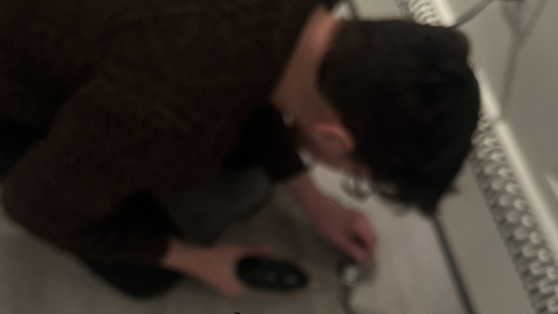

blurry process pic of me soldering a transducer for settle, a multimedia installation created in collaboration with Alexandra Wood at Philadelphia Small Works Gallery, opening tonight at 6pm. Thanks to Souha Yan for helping me source these transducers. Thanks to dani derks for helping me figure out the wiring. Thanks, also, to Zack Scholl, whose blog post on multichannel audio in supercollider on linux was very helpful, to Robbie Lyman for some last-minute code review, and to Ezra Buchla for writing a lovely piano sound in supercollider that I modified very slightly and repurposed for this piece.
williamthazard [at] pm.me